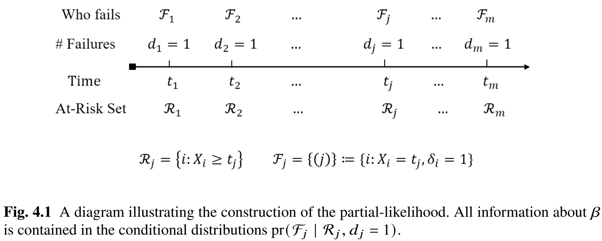

library(survival)
# Example data frame 'mydata' with columns:
# time: Event or censoring time
# status: Event indicator (1 if event observed, 0 if censored)
# x1, x2: Covariates
# group: A grouping variable (e.g., for stratification)
# 1. Fit a basic Cox model
obj <- coxph(Surv(time, status) ~ x1 + x2, data = mydata)
# 2. Summarize the fitted model
summary(obj)
# This provides coefficient estimates (log-hazard), hazard ratios (exp(coef)),
# standard errors, confidence intervals, and p-values.
# 3. Obtain Breslow estimates of the baseline cumulative hazard
base_haz <- basehaz(obj, centered = FALSE)
head(base_haz)
# 4. Extract residuals for diagnostics
mart_res <- residuals(obj, type = "martingale") # Martingale residuals
sch <- cox.zph(obj) # Schoenfeld residuals and tests
# 5. Fit a stratified Cox model
obj_str <- coxph(Surv(time, status) ~ x1 + x2 + strata(group), data = mydata)
# 6. Fit a Cox model with time-varying covariates
# (Requires data in long "start-stop" format)
obj_tv <- coxph(Surv(start, stop, event) ~ x1 + tv_cov, data = tv_data)Chapter 4 - Cox Proportional Hazards Regression
\[ \def\T{\mathrm{T}} \]
Slides
Lecture slides here. (To convert html to pdf, press E \(\to\) Print \(\to\) Destination: Save to pdf)
Chapter Summary
The Cox proportional hazards model is a most popular semiparametric regression model for time-to-event data. The partial likelihood provides a key tool for making inferences on parametric covariate effects in the presence of a nonparametric time trend.
Basic model specification
The Cox proportional hazards model expresses each subject’s hazard rate as a product of a baseline function and an exponential term involving covariates. For a subject with covariates \(Z\), the hazard at time \(t\) is
\[ \lambda(t \mid Z) = \lambda_0(t)\exp(\beta^{\rm T} Z). \]
This decomposition leaves \(\lambda_0(t)\) fully unspecified, focusing on the log-hazard coefficients \(\beta\). Under proportional hazards, any two covariate sets differ by a constant hazard ratio over time, enabling a direct interpretation of \(\exp(\beta_k)\) as the risk multiplier per unit increase in the \(k\)-th covariate.
The partial-likelihood approach
Estimation of \(\beta\) proceeds through a partial-likelihood function that isolates each event’s contribution while conditioning on the subjects at risk. Suppose the observed sample has unique failure times \(t_1 < \dots < t_m\), each with a single failing subject denoted by \((j)\). Let \(\mathcal{R}_j\) be the risk set at \(t_j\), meaning the indices of all subjects still under observation just before \(t_j\).

Then the Cox partial likelihood is
\[ PL(\beta) = \prod_{j=1}^m \frac{ \exp(\beta^\T Z_{(j)}) }{ \sum_{i \in \mathcal{R}_j} \exp(\beta^\T Z_i) }, \] where \(Z_{(j)}\) is the covariate vector for the subject who fails at \(t_j\). This construction eliminates \(\lambda_0(t)\) from the likelihood by focusing on how the failures are “allocated” among those at risk.
Taking logarithms leads to the log-partial likelihood,
\[ \log PL(\beta) = \sum_{j=1}^m \left[ \beta^\T Z_{(j)} \;-\; \log \sum_{i \in \mathcal{R}_j} \exp\{\beta^\T Z_i\} \right]. \]
We then differentiate to obtain the partial-likelihood score function,
\[ U(\beta) = \frac{\partial}{\partial \beta} \log PL(\beta) = \sum_{i=1}^n \delta_i \Biggl[ Z_i - \frac{ \sum_{j=1}^n I(X_j \ge X_i)\, Z_j\, \exp(\beta^\T Z_j) }{ \sum_{j=1}^n I(X_j \ge X_i)\, \exp(\beta^\T Z_j) } \Biggr], \]
which is set to zero to solve for the maximum partial-likelihood estimator \(\hat{\beta}\). The resulting \(\hat{\beta}\) inherits many large-sample properties from classical likelihood theory, including approximate normality and consistent variance estimation. Standard errors, Wald tests, and confidence intervals for hazard ratios \(\exp(\hat{\beta}_k)\) are then derived in a manner analogous to parametric models.
Residual-based diagnostics
Model adequacy is assessed via residuals that reveal potential violations of proportional hazards or mis-specification of covariate functional forms.
Cox–Snell residuals transform observed times and event indicators so that, under correct modeling, they should behave like censored samples from an exponential distribution with unit mean.
Schoenfeld residuals target the time constancy of each covariate’s hazard ratio. If a covariate’s effect changes over time, its Schoenfeld residuals display systematic trends.
Martingale and deviance residuals detect nonlinearity or outliers in continuous covariates by measuring how observed outcomes differ from fitted values. Plotting these against each covariate often shows whether transformations or alternative model structures are needed.
Time-varying covariates
Some covariates evolve during follow-up (internal) or follow external factors independent of the subject’s health status (external). A time-varying \(Z(t)\) replaces the static \(Z\) in the hazard model:
\[ \lambda(t \mid Z(\cdot)) = \lambda_0(t)\exp\{\beta^\T Z(t)\}. \]
For internal covariates, the hazard depends on the covariate history only through its most recent value. Estimation still uses the same partial-likelihood framework, but data must be organized in “start–stop” segments that reflect changing covariate levels over time.
Statistical properties via martingale
Large-sample properties of the partial-likelihood estimator follow from writing the score function as a sum of martingale integrals. This perspective simplifies the derivation of asymptotic variance formulas for \(\hat{\beta}\) and helps justify robust inferences under independent censoring. The Breslow estimator of the baseline hazard, \(\hat{\Lambda}_0(t)\), also arises through martingale arguments, matching how the Nelson–Aalen estimator can be viewed for simpler nonparametric settings.
Software use
Fitting a Cox model in R can be done with just a few commands from the survival package:
Beyond these base functions, other packages offer enhanced output and plots:
gtsummarycan produce formatted tables of estimated coefficients, hazard ratios, and confidence intervals in a single step usingtbl_regression(obj, exponentiate = TRUE).survminerprovides visualization tools:ggcoxzph(cox.zph(obj))to diagnose proportional hazards via Schoenfeld residuals, andggforest(obj)to show a forest plot of hazard ratios.ggsurvfitsimplifies the creation of Kaplan–Meier curves alongside at-risk tables, p-values, and confidence intervals.
Conclusion
The Cox proportional hazards model accommodates flexible, nonparametric baseline hazards while preserving a straightforward regression interpretation of covariate effects. Partial-likelihood estimation, together with various model-based residuals, allows rigorous inferences of covariate effects and time trends. Time-varying covariates further expand its applicability to complex longitudinal settings. By combining robust inference with interpretability, the Cox model remains a central tool in regression-based survival analysis.
R Code
Show the code
###############################################################################
# Chapter 4 R Code
#
# This script reproduces all major numerical results in Chapter 4, including:
# 1. A Cox proportional hazards model on the German Breast Cancer (GBC) study
# (Figure 4.2, Table 4.1)
# 2. Residual analysis and model diagnostics (Figures 4.3–4.6, Tables 4.2–4.4)
# 3. Cox model with time-varying covariates for Stanford Heart study (Table 4.6)
###############################################################################
#==============================================================================
# (A) Cox Proportional Hazards Model on GBC Data
# (Section 4.2.6, Figure 4.2)
#==============================================================================
library(survival)
library(tidyverse) # for data manipulation and visualization
#------------------------------------------------------------------------------
# 1. Read GBC data, subset to first events, set up for Cox PH
#------------------------------------------------------------------------------
gbc <- read.table("Data//German Breast Cancer Study//gbc.txt")
# Sort the data by time within each id
o <- order(gbc$id, gbc$time)
gbc <- gbc[o,]
# Keep the first row for each id (first event)
df <- gbc[!duplicated(gbc$id), ]
# Set status = 1 if status == 2 or 1
df$status <- (df$status > 0) + 0
#------------------------------------------------------------------------------
# 2. Fit the Cox proportional hazards model
#------------------------------------------------------------------------------
# Convert categorical variables to factors
df$hormone <- factor(df$hormone)
df$meno <- factor(df$meno)
df$grade <- factor(df$grade)
# Reduce the scales of prog and estrg by 100
df$prog <- df$prog / 100
df$estrg <- df$estrg / 100
obj <- coxph(
Surv(time, status) ~ hormone + meno + age + size + grade + prog + estrg,
data = df
)
# beta estimates
obj$coefficients
# variance matrix
obj$var
# Summarize results
summary(obj)
# Wald test on tumor grade (H_0: beta_grade2 = beta_grade3 = 0)
beta_q <- obj$coefficients[5:6]
Sigma_q <- obj$var[5:6, 5:6]
chisq2 <- t(beta_q) %*% solve(Sigma_q) %*% beta_q
pval <- 1 - pchisq(chisq2, 2)
pval
#------------------------------------------------------------------------------
# 3. Breslow estimates of the baseline cumulative hazard
#------------------------------------------------------------------------------
Lambda0 <- basehaz(obj, centered = FALSE)
# Plot the baseline hazard function
plot(
stepfun(Lambda0$time, c(0, Lambda0$hazard)),
do.points = FALSE,
cex.axis = 0.9,
lwd = 2,
frame.plot = FALSE,
xlim = c(0, 100),
ylim = c(0, 0.8),
xlab = "Time (months)",
ylab = "Baseline cumulative hazard",
main = ""
)
#------------------------------------------------------------------------------
# 4. Enhanced tabulation via gtsummary
#------------------------------------------------------------------------------
library(gtsummary)
obj <- coxph(
Surv(time, status) ~ hormone + meno + age + size + grade + prog + estrg,
data = df
)
tbl <- tbl_regression(
obj,
exponentiate = TRUE,
label = list(
hormone = "Hormone",
meno = "Menopause",
age = "Age (years)",
size = "Tumor size (mm)",
grade = "Tumor grade (1-3)",
prog = "Progesterone (fmol/mg)",
estrg = "Estrogen (fmol/mg)"
)
)
tbl
#------------------------------------------------------------------------------
# 5. Forest plot via survminer
#------------------------------------------------------------------------------
library(survminer)
ggforest(obj, data = df)
#==============================================================================
# (B) Residual Analysis (Figures 4.3–4.6)
#==============================================================================
############################
# Cox-Snell residuals, etc.
############################
#------------------------------------------------------------------------------
# 1. Cox-Snell residuals
#------------------------------------------------------------------------------
coxsnellres <- df$status - resid(obj, type = "martingale")
# Then use the N–A method to estimate the cumulative hazard of residuals
fit <- survfit(Surv(coxsnellres, df$status) ~ 1)
Htilde <- cumsum(fit$n.event / fit$n.risk)
par(mfrow = c(1, 1))
plot(
log(fit$time), log(Htilde),
xlab = "log(t)",
ylab = "log-cumulative hazard",
frame.plot = FALSE,
xlim = c(-8, 2),
ylim = c(-8, 2)
)
abline(0, 1, lty = 3, lwd = 1.5)
# ggplot version of Cox-Snell
tibble(
time = fit$time,
Htilde = Htilde
) %>%
ggplot(aes(x = log(time), y = log(Htilde))) +
geom_point(size = 2) +
geom_abline(intercept = 0, slope = 1, linetype = "dashed", linewidth = 1) +
xlab("log(t)") +
ylab("Log-cumulative hazard") +
theme_minimal() +
coord_fixed()
ggsave("images/cox_cox_snell.png", width = 4, height = 4)
ggsave("images/cox_cox_snell.eps", width = 4, height = 4)
#------------------------------------------------------------------------------
# 2. Schoenfeld residuals (test proportional hazards)
#------------------------------------------------------------------------------
sch <- cox.zph(obj)
sch$table # p-values for each covariate and the global test
# Base R plots
par(mar = c(4, 4, 2, 2), mfrow = c(4, 2))
plot(
sch,
xlab = "Time (months)",
lwd = 2,
cex.lab = 1.2,
cex.axis= 1.2,
ylab = c("Hormone", "Menopause", "Age", "Tumor size",
"Tumor grade", "Progesterone", "Estrogen")
)
# survminer version
ggcoxzph(sch)
#------------------------------------------------------------------------------
# 3. Re-fit with stratification by tumor grade
#------------------------------------------------------------------------------
obj_stra <- coxph(
Surv(time, status) ~ hormone + meno + age + size + prog + estrg + strata(grade),
data = df
)
# Check PH with stratification
sch_stra <- cox.zph(obj_stra)
round(sch_stra$table, 4)
ggcoxzph(sch_stra)
# Residual plots for stratified model
par(mfrow = c(3, 2))
plot(
sch_stra,
xlab = "Time (months)",
lwd = 2,
cex.lab = 1.2,
cex.axis = 1.2,
ylab = c("Hormone", "Menopause", "Age", "Tumor size",
"Progesterone", "Estrogen")
)
#------------------------------------------------------------------------------
# 4. Martingale/deviance residuals
#------------------------------------------------------------------------------
mart_resid <- resid(obj_stra, type = "martingale")
dev_resid <- resid(obj_stra, type = "deviance")
# Plot martingale residuals vs. quantitative covariates
par(mfrow = c(2, 2))
# Age
plot(
df$age, mart_resid,
xlab = "Age (years)",
ylab = "Martingale residuals",
main = "Age",
cex.lab = 1.2,
cex.axis= 1.2
)
lines(lowess(df$age, mart_resid), lwd = 2)
abline(0, 0, lty = 3, lwd = 2)
# Tumor size
plot(
df$size, mart_resid,
xlab = "Tumor size (mm)",
ylab = "Martingale residuals",
main = "Tumor size",
cex.lab = 1.2,
cex.axis= 1.2
)
lines(lowess(df$size, mart_resid), lwd = 2)
abline(0, 0, lty = 3, lwd = 2)
# Progesterone
plot(
df$prog, mart_resid,
xlab = "Progesterone receptor (100 fmol/mg)",
ylab = "Martingale Residuals",
main = "Progesterone",
cex.lab = 1.2,
cex.axis= 1.2
)
lines(lowess(df$prog, mart_resid), lwd = 2)
abline(0, 0, lty = 3, lwd = 2)
# Estrogen
plot(
df$estrg, mart_resid,
xlab = "Estrogen receptor (100 fmol/mg)",
ylab = "Martingale Residuals",
main = "Estrogen",
cex.lab = 1.2,
cex.axis= 1.2
)
lines(lowess(df$estrg, mart_resid), lwd = 2)
abline(0, 0, lty = 3, lwd = 2)
#------------------------------------------------------------------------------
# 5. Addressing non-linear age effect
#------------------------------------------------------------------------------
df$agec <- (df$age <= 40) + 2 * (df$age > 40 & df$age <= 60) + 3 * (df$age > 60)
df$agec <- factor(df$agec)
obj_stra_final <- coxph(
Surv(time, status) ~ hormone + meno + agec + size + prog + estrg + strata(grade),
data = df
)
final_sum <- summary(obj_stra_final)
final_sum
# Tabulate final model results
tbl_final <- tbl_regression(
obj_stra_final,
exponentiate = TRUE,
label = list(
hormone = "Hormone",
meno = "Menopause",
agec = "Age group",
size = "Tumor size (mm)",
prog = "Progesterone (100 fmol/mg)",
estrg = "Estrogen (100 fmol/mg)"
)
)
# Print table
tbl_final
# Plot the age-group-specific HR and confidence intervals (Figure 4.6)
ci.table <- final_sum$conf.int
hr <- ci.table[3:4, 1]
hr.low <- ci.table[3:4, 3]
hr.up <- ci.table[3:4, 4]
par(mfrow = c(1, 1))
plot(
1:3, c(1, hr),
ylim = c(0, 1.2),
frame = FALSE,
xaxt = 'n',
xlab = "Age (years)",
ylab = "Hazard ratio",
pch = 19,
cex = 1.5,
cex.lab = 1.2,
cex.axis = 1.2
)
axis(1, at = c(1, 2, 3), labels = c("(20, 40]", "(40, 60]", "(60, 80]"), cex.axis = 1.2)
arrows(2:3, hr.low, 2:3, hr.up, length = 0.05, angle = 90, code = 3, lwd = 2)
lines(1:3, c(1, hr), lty = 3, lwd = 2)
# ggplot version
tibble(
age_group = c("(20, 40]", "(40, 60]", "(60, 80]"),
HR = c(1, hr),
HR_low = c(1, hr.low),
HR_up = c(1, hr.up)
) %>%
ggplot(aes(x = age_group, y = HR)) +
geom_point(size = 3) +
geom_errorbar(aes(ymin = HR_low, ymax = HR_up), width = 0.2, linewidth = 0.8) +
geom_line(group = 1, linetype = "dashed", linewidth = 0.8) +
xlab("Age group (years)") +
ylab("Hazard ratio") +
theme_minimal() +
scale_y_log10(
limits = c(0.125, 1.05),
breaks = c(0.125, 0.25, 0.5, 0.75, 1),
labels = scales::label_percent(accuracy = 1)
) +
theme(axis.text = element_text(size = 10))
ggsave("images/cox_nonlinear_age.png", width = 7.5, height = 4)
ggsave("images/cox_nonlinear_age.eps", width = 7.5, height = 4)
#==============================================================================
# (C) Illustration with Time-Varying Covariates
# (Stanford Heart Study)
#==============================================================================
head(heart)
# Rename variable "year" -> "accpt"
colnames(heart)[5] <- "accpt"
# Sample size
n <- length(unique(heart$id))
#------------------------------------------------------------------------------
# 1. Fit a Cox model with a time-dependent "transplant" variable
#------------------------------------------------------------------------------
obj <- coxph(Surv(start, stop, event) ~ age + accpt + surgery + transplant, data = heart)
summary(obj)
# Tabulate using gtsummary
heart_tbl <- tbl_regression(
obj,
exponentiate = TRUE,
label = list(
age = "Age (years)",
accpt = "Acceptance",
surgery = "Surgery",
transplant= "Transplant"
)
)
heart_tbl